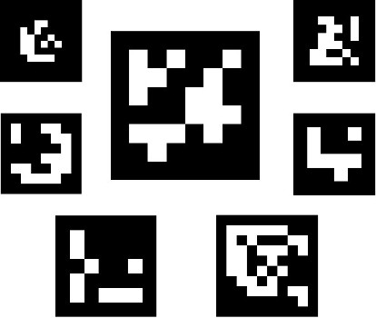
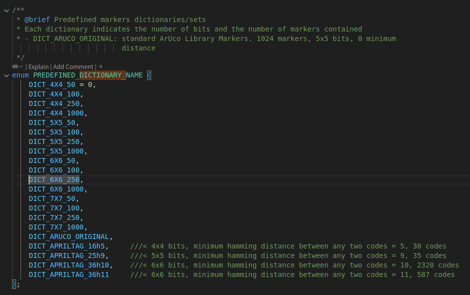
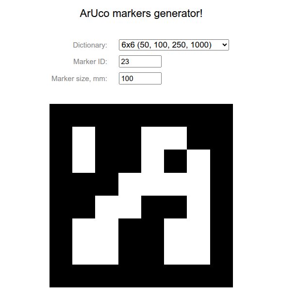
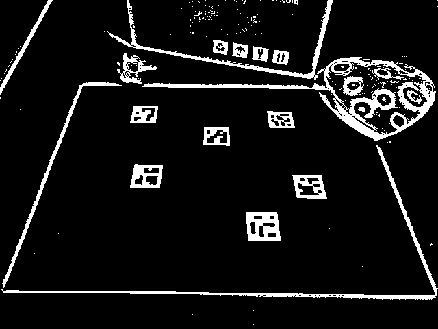
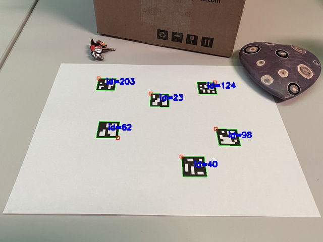
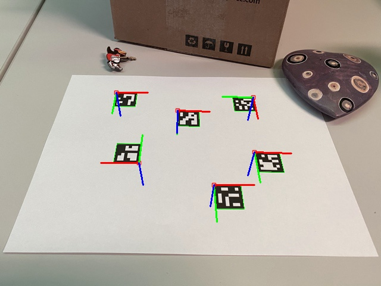

ArUco Marker Detection
相关OpenCV教程
Detection of ArUco Markers中介绍了如何使用OpenCV来检测ArUco码。 Detection of ArUco boards
ArUco Marker
ArUco码可以用来检测物体的位姿。通过识别ArUco码上方的角点像素坐标，以及利用已知的ArUco码的尺寸，利用PnP算法，可以估计出相机和ArUco码之间的位姿关系。 ArUco吗的四周一圈是纯黑色边缘，中间是二维码编码区域，编码区域可能有4x4、5x5、6x6个编码像素。
一些ArUco码图片：

当固定了ArUco的编码数量（6x6）之后，ArUco码就是可数可列的。在OpenCV中，有很多预定义的ArUco码字典。一个字典里就包含了所有可能的ArUco码。

在字典里，不同的具体的ArUco码用id来指定。这里有一个生成ArUco码的网站 ArUco Marker Generator
比如生成一个6x6的ArUco码，id为23，如下图：

在OpenCV中，跟aruco相关的函数定义在cv2.aruco模块中。可以通过如下代码获得ArUco码
1 |
|
获得的图片如下（来自OpenCV教程）
ArUco码检测
在OpenCV中，可以用cv::aruco::ArucoDetector::detectMarkers()来检测ArUco码。这个函数会返回检测到的ArUco码的id，以及每个ArUco码的4个角点像素坐标。角点坐标顺序从左上角开始，顺时针排列。 里面的算法大概步骤分为两步：
- 找到候选区域。找到类正方形的区域，经过一些筛选，得到候选区域。
- 对于各个候选区域，尝试检测码中的编码信息，及黑白格子的序列。黑为0，白为1。检测到编码信息后，可以判断这个码是不是在字典中的码。


代码
1 | cv::aruco::ArucoDetector detector(dictionary, detectorParams); |
ArUco码位姿检测
对于单一的一个ArUco码，可以检测出4个角点的像素坐标。同时，我们在ArUco上定义一个坐标系，可以预先定义这4个角点的3d坐标。这样，我们就可以利用PnP算法，来估计相机和ArUco码之间的位姿关系。 在ArUco上的坐标系定义，可以采取不同的方式。比如，可以定义一个以ArUco码中心为原点，x轴指向ArUco码的右方，y轴指向ArUco码的上，z轴根据右手法则定义。也可以定义为，原点以ArUco码的左上角为原点，x轴指向ArUco码的右方，y轴指向ArUco码的下方，z轴根据右手法则定义。按照第二种方式定义的坐标系，经过ArUco码位姿估计之后，利用函数画出来的结果如下：

检测单个Marker的位姿可以用如下OpenCV函数：
1 | cv::aruco::estimatePoseSingleMarkers(corners, marker_size_, cameraMatrix_, |
ArUco板检测
如果一个板子上有多个ArUco码，那么可以检测出多个ArUco码，每个码有4个角点，所有的ArUco码角点可以联合起来对板子进行位姿求解，获得更好的板子位姿。
1 | int valid = cv::aruco::estimatePoseBoard( |
也可以用OpenCV的教程Detection of ArUco boards里面提供的方法